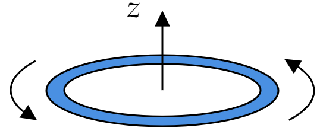

A thin uniform donut, carrying charge $Q $ and mass $M $, rotates about its axis as shown in Fig. 5.67 :
(a) Find the ratio of its magnetic dipole moment to its angular momentum. This is called the gyromagnetic ratio (or magnetomechanical ratio).
(b) What is the gyromacnetic ratio for a uniform spinning sphere? (This requires no new calculation; simply decompose the sphere into infinitesimal rings, and apply the result of part (a))
(c) According to quantum mechanics, the angular momentum of a spinning electron is $1/2\hbar $, where $\hbar $ is Planck's constant. What, then, is the electron's magnetic dipole moment, in $\mathbf{A}\cdot m^2 $?
(This semiclassical value is actually off by a factor of almost exactly 2. Dirac's relativistic electron theory got the 2 right, and Feynman, Schwinger, and Tomonaga later calculated tiny further corrections. The determination of the electron's magnetic dipole moment remains the finest achievement of QED, and exhibits perhaps the most stunningly precise agreement between theory and experiment in all of physics. Incidentally, the quantity $e\hbar /2m $, where $e $ is the charge of the electron and $m $ is its mass, is called the Bohr magneton).
Recall that the moment of inertia of a hoop (ring) about its cylindrical axis is
\[I=MR^2 \]Where $M $ denotes the mass of the ring and $R $ its radius.
We recall that angular momentum is defined as
\[\mathbf{L}=I\boldsymbol{\omega } \]Where $I $ is the moment of intertia. Thus, we have that the angular momentum of this ring is:
\[\mathbf{L}_{\text{ring} }= MR^2\omega \hat{\mathbf{z}} \]Where the vectorized angular speed is taken to be $\boldsymbol{\omega }=\omega \hat{\mathbf{z}} $.
The magnetic dipole moment, as introduced in Section 5.4.3, is defined as:
\[\mathbf{m}=I\mathbf{a}\tag{Eq. 5.86, page 252} \]Where $I $ is the current and $\mathbf{a} $ denotes the vector area. We have that the current is:
\begin{align*} I &= \frac{\text{charge} }{\text{time} } \\ &= \frac{Q}{2\pi /\omega }\\ &= \frac{Q\omega }{2\pi } \end{align*}The area of the loop is $\pi R^2 $ (that of a circle), and we vectorize it in such a way that it points upwards (normal to the surface):
\[\mathbf{a}=\pi R^2 \hat{\mathbf{z}} \]We see than that
\begin{align*} \mathbf{m} &= \frac{Q\omega }{2\pi }\pi R^2 \hat{\mathbf{z}} \\ &= \frac{Q\omega }{2 } R^2 \hat{\mathbf{z}} \end{align*}It is clear that $\mathbf{L} $ and $\mathbf{m} $ point in the same direction, in fact:
\begin{align*} \mathbf{m} &= \frac{Q\omega }{2 } R^2\frac{M}{M} \hat{\mathbf{z}} \\ &= \left( \frac{Q}{2M} \right) M\omega R^2 \hat{\mathbf{z}}\\ &= \left( \frac{Q}{2M} \right)\mathbf{L} \end{align*}So the gyromacnetic ratio is
\[\frac{Q}{2M} \]Notice that we are considering a ratio. This ratio does not depend on any geometrical quantities, but rather the total charge $Q $ and mass $M $. As such, it follows that the ratio will be the same
\[\frac{Q}{2M} \]Again, it is important that you realize why it is the same.
We follow through a direct calculation:
\begin{align*} m &= \frac{Q}{2M}L \\ &= \frac{Q}{2M}\frac{\hbar }{2}\tag{As indicated in the problem}\\ &= \frac{e}{2m}\frac{\hbar }{2}\\ &= \frac{e\hbar }{4m}\\ &= \frac{(1.602\times 10^{-19}\text{C} )(1.0545\times 10^{-34}\text{J} \cdot \text{s} )}{4(9.109\times 10^{-31}\text{kg} )} \\ &= 4.63637\times 10^{-24} \;\text{A} \cdot \text{m} ^2 \end{align*}